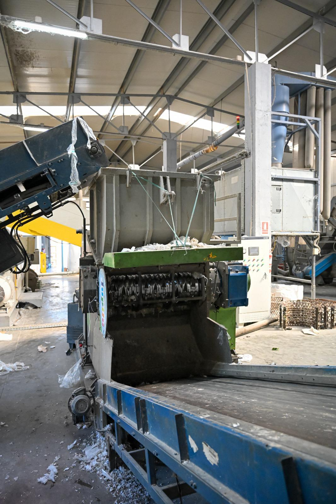
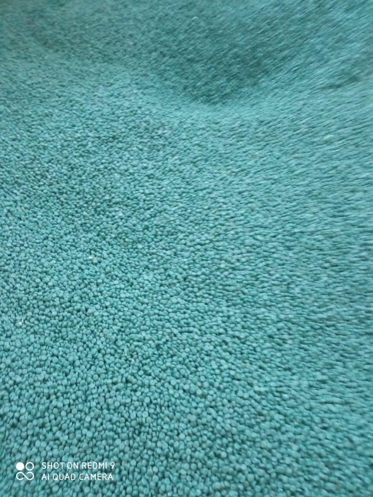
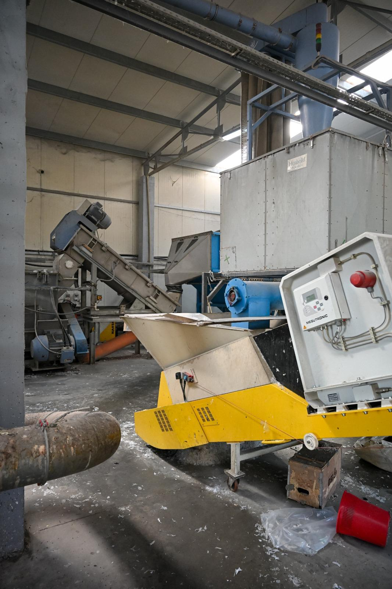
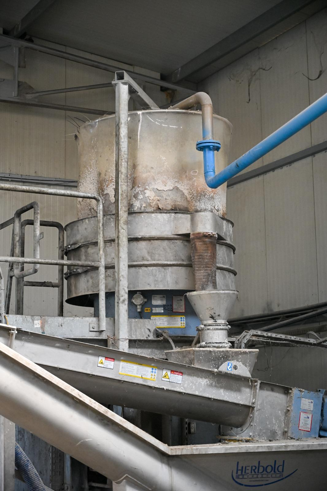
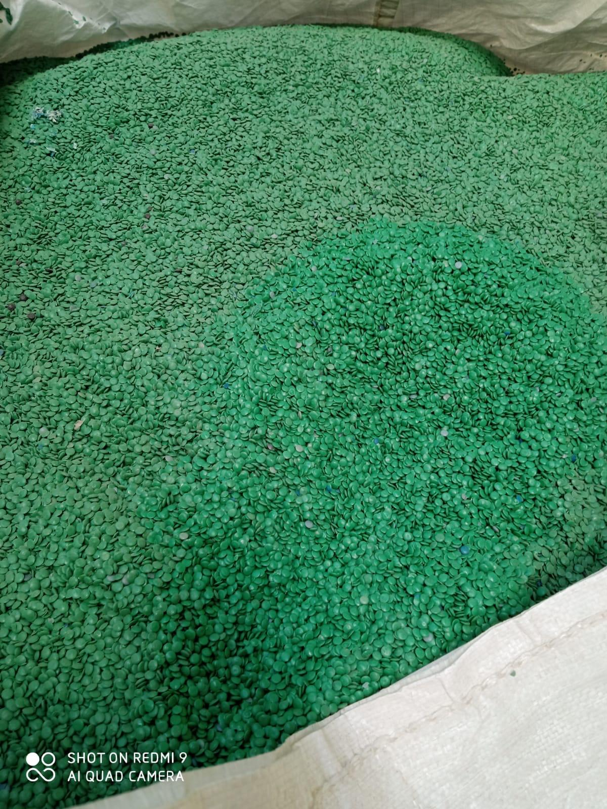
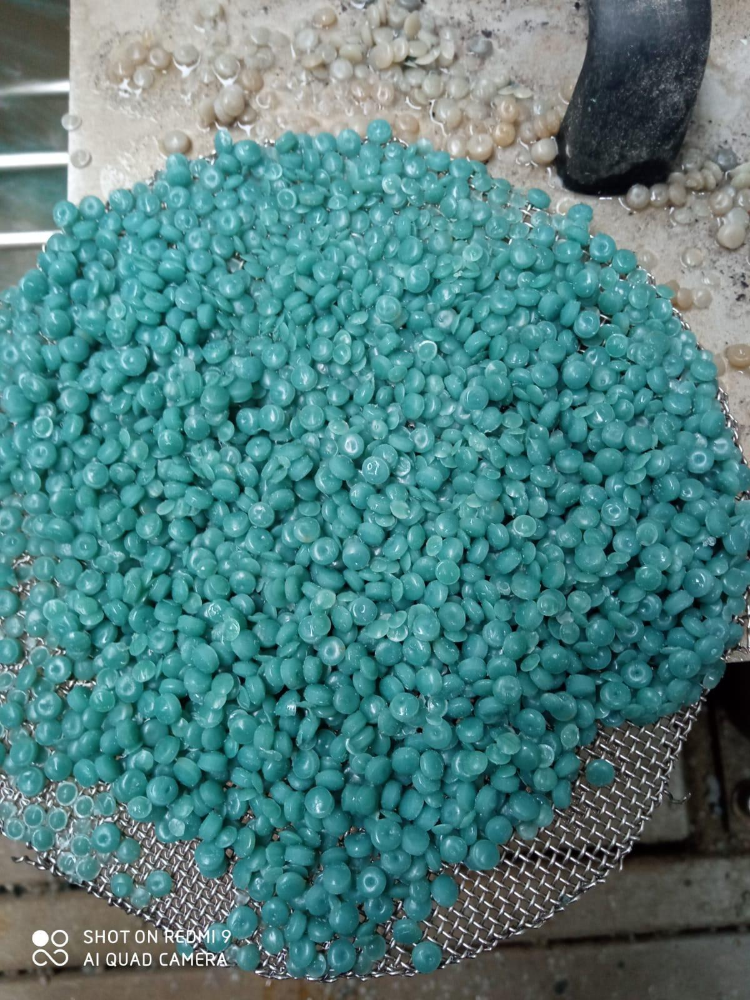
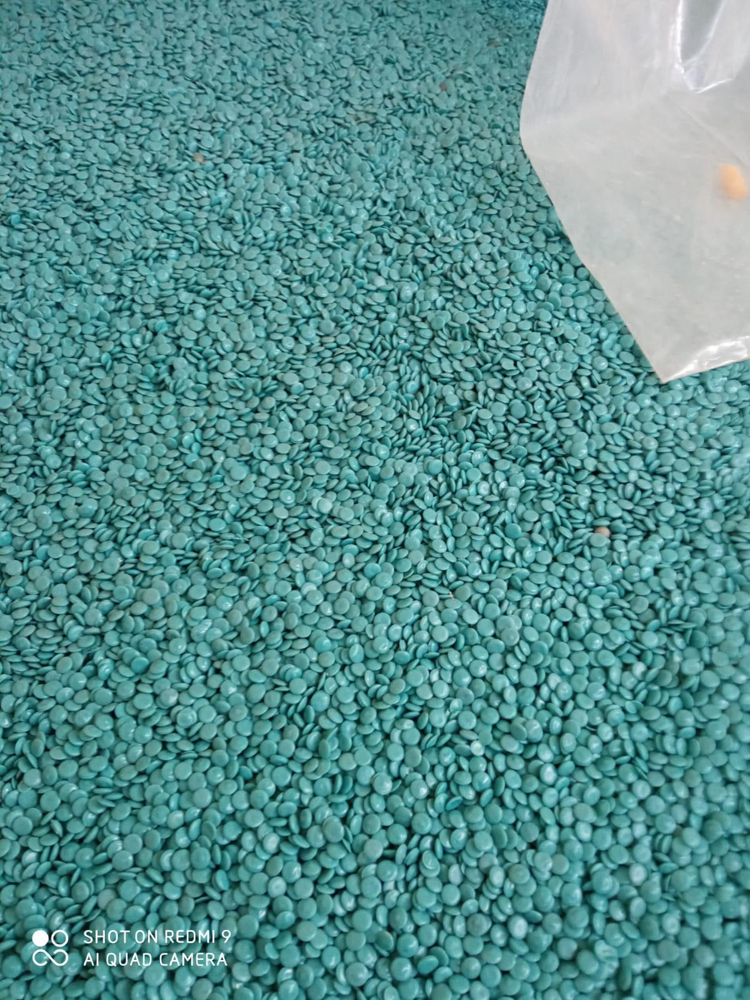
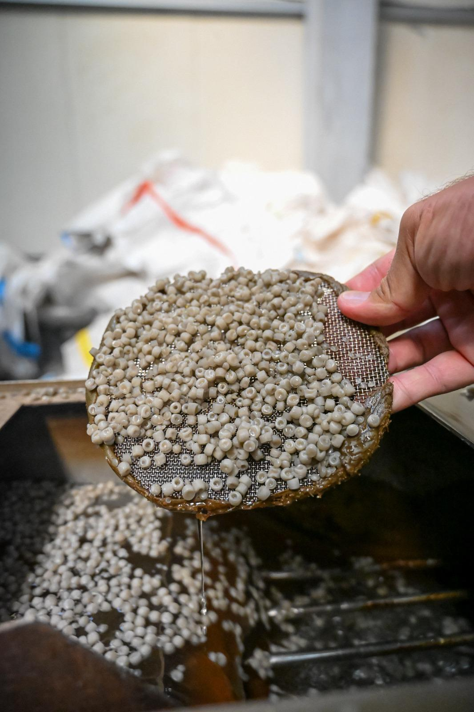

Instalații de procesare
Echipamentele și liniile de producție ale fabricii.

Site-ul de prezentare al Smart Eco Industry – activitate industrială de reciclare și producție de granule plastice din materiale reciclate.
Smart Eco Industry este o companie orientată către reciclarea și valorificarea materialelor plastice și transformarea acestora în granule reciclate destinate utilizării industriale.
Site-ul prezintă activitatea fabricii, produsul finit, instalațiile și rezultatele procesului prin fotografii reale furnizate de companie.
Nu folosim fotografii generice pentru a reprezenta produsul: imaginile din site provin din materialele transmise pentru Smart Eco Industry.
Fotografiile arată instalațiile, fluxul de material, echipamentele și etapele de procesare. Descrierile tehnice exacte pot fi completate ulterior cu datele fabricii.

Echipamentele și liniile de producție ale fabricii.

Materialul trece prin etapele necesare pentru obținerea produsului reciclat.

Utilaje și echipamente utilizate în activitatea fabricii.
Imaginile de mai jos prezintă produsul real în diferite forme, culori, cantități și etape ale procesului.
Aspectul și culoarea materialului pot varia în funcție de lot și de caracteristicile materialului procesat. Tipul exact de polimer, specificațiile tehnice și aplicațiile recomandate vor fi prezentate pe site după confirmarea acestora de către Smart Eco Industry.




O selecție de fotografii reale din activitatea Smart Eco Industry.
Valorificarea materialelor plastice și reintrarea lor în circuitul economic.
Prezentăm fabrica, utilajele și produsul prin imagini reale.
Site-ul este construit pentru prezentarea companiei către parteneri și clienți industriali.
Pentru informații despre granule, disponibilitate, colaborări sau vizita la fabrică, contactează Smart Eco Industry.